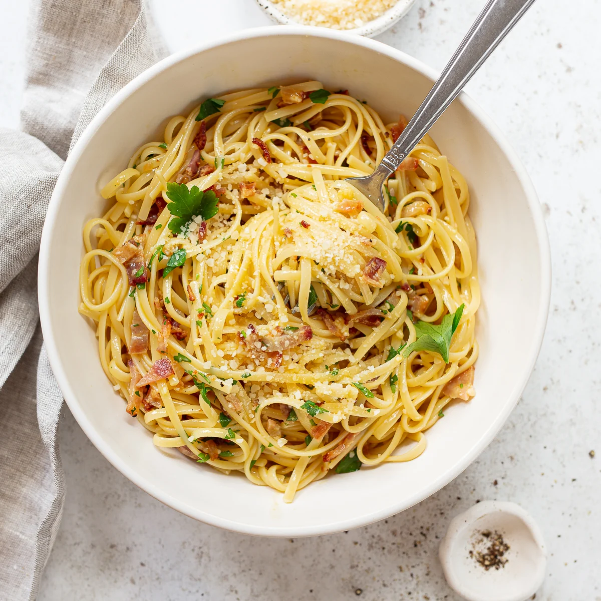

Carbonara Recipe
Carbonara Recipe

This comforting pasta dinner is ready to serve in about 30 minutes, and features
spaghetti in a creamy sauce with eggs, thick-cut bacon, and two kinds of grated
cheese, Parmesan and pecorino Romano.
Ingredients:
- 12 ounces (225 g) thick-sliced bacon
- Kosher salt
- 3 large egg yolks
- 1 large whole egg
- 1/2 cup freshly grated Parmesan cheese, plus more for serving
- 1/2 cup freshly grated pecorino Romano cheese, plus more for serving
- Freshly ground black pepper, to taste
- 1 pound (450 g) dried spaghetti, bucatini or linguine pasta
- 1/4 cup chopped fresh italian parsley
Instructions:
- Preheat the oven to 400 (200 C) degrees and line a large tray with paper towels.
- Arrange the bacon on a rimmed baking sheet. Bake for 15-20 minutes, flipping the
pieces halfway through, until the bacon is deeply colored and crisp. Transfer to the
tray to blot excess fat. Chop the bacon into small pieces.
- Whisk the egg yolks, whole egg, Parmesan and Pecorino cheeses, 1/4 teaspoon salt and black
pepper in a large mixing bowl. if you have a large pasta serving bowl, use that to mix and serve.
- Bring 4-5 quarts of water to a boil in a large saucepan or pot and add
1 tablespoon salt. Add the pasta and cook according to package directions until al
dente (usually about 10 minutes.) Scoop out 3/4 cup of the cooking water before draining the pasta.
- Whisk ½ cup of the hot water into into the egg yolk mixture — this tempers the eggs so they won't scramble.
- Immediately dump the hot pasta into the bowl, then toss it all together quickly and thoroughly, using tongs
or two spoons. You can add more water if the sauce seems dry. Sprinkle the bacon and parsley over the pasta
and toss to combine. Serve right away, with additional grated cheese on the side.
Nutrition:
Calories: 810kcal Carbohydrates: 94g Protein: 33g Fat: 32g Sodium: 586mg Fiber: 7g Sugar: 6g
Homepage